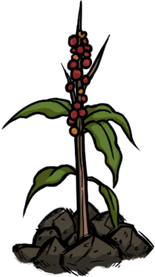
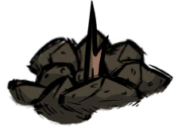
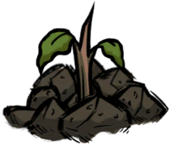
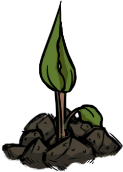
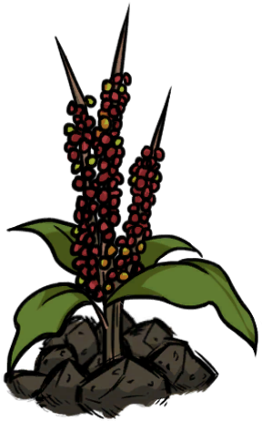
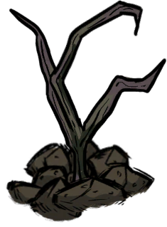

咖啡植株Coffee Plant
种一次能连收三茬，是咖啡饮品的原料来源。
生长时间
4–7天
适宜季节
春 · 夏
耗水
中等
成熟保鲜
4天
首株收获
2–4果
可再生
3茬
收获产物
咖啡果 ×2 ~ 4
普通成熟株
咖啡果 ×5 ~ 7
巨型株
腐烂物 ×1
巨型株给 3 个
？？？：跟这个世界的咖啡品种有些不一样。
生长阶段
咖啡植株沿用原版农作物的那套阶段，只是时间参数照抄火龙果。播下去之后大约 0.75 – 1 天发芽，之后 4 – 7 天走完剩下的阶段。
| 阶段 | 外观 | 说明 |
|---|---|---|
| 种子 | 刚播下，约0.75 ~ 1 天后发芽 | |
| 发芽 |  |
冒出嫩芽，还不能采收 |
| 小 |  |
植株开始长开 |
| 中 |  |
临近成熟，这段时间最容易缺水 |
| 成熟 | 可以采收， 4 天不收就会烂掉 | |
| 巨型 |  |
满足巨型作物条件时长成，收获翻倍 |
| 腐烂 |  |
只能收到腐烂物，采完连农田土一起毁掉 |
茎与再生
这是咖啡和原版作物差别最大的地方：采收之后植株不会消失，而是在原地留下一株「咖啡果茎」，过一阵子重新结果——也就是说种一次能连收三茬。
- 第一次采收：正常收获后留下茎，普通株留普通茎、巨型株留巨型茎。
- 后续两茬：茎会重新走一遍「等待 → 结果」的循环，再结果的时间大约是 0.8 ~ 1.4 天。
- 第三茬收完就报废：累计采收满 3 次后，茎会立刻永久枯萎。
- 养分照旧：茎每轮重新结果时，会重复首株那套「吃堆肥、还粪肥」的循环。
- 可以铲掉：拿铲子能挖掉枯萎的茎，但不会返还种子或果实，只是清理场地。
和原版作物的区别：原版作物收完就没了，得重新播种；咖啡靠留茎把「一次播种」变成「三次收获」，种下去之后省的是重复开垦和等待发芽的时间。
种植要点
| 项目 | 咖啡植株 | 说明 |
|---|---|---|
| 消耗养分 | 堆肥（中等） | 每阶段消耗 4 点 |
| 产出养分 | 粪肥（+8） | 同一阶段往第 3 类养分里补 8 点 |
| 耗水 | 中等 | 和茄子、南瓜同档（每阶段2%） |
| 适宜季节 | 春 · 夏 | 秋冬生长会变慢，且不会变成巨大 |
| 防火 | 是 | 带 fireproof 标记，不会被火点着 |
| 巨型作物 | 可以 | 条件和火龙果同一档，长成后一次收 5 – 7 个 |
种子从哪来：咖啡果本身就是种子，直接种到已开垦的农田土块上就行；此外普通随机种子也有概率开出咖啡，权重和火龙果同属稀有档。
你知道吗
- 原版火龙果和咖啡1:1混种可以互相管住对方的肥料需求。
- 咖啡果既是果实也是种子：烤了能做成「鼻青脸肿的烤咖啡豆」，铺在地上晾晒则变成咖啡豆。
- 它没有注册进原版的植物图鉴——因为「采后留茎、一株三收」的机制和图鉴的进度统计对不上，索性就不塞进去了。